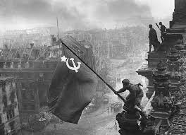

Битка за Берлин је почела у априлу 1945, као последња велика офанзива европског театра. Совјетске снаге, којима су командовали маршали Георгиј Жуков и Иван Конев, приближиле су се немачкој престоници са истока, југа и севера. До ове фазе, нацистичка Немачка је била у самртној муци, са западним савезницима који су напредовали са запада и совјетским снагама које су притискале са истока. Хитлер и његови преостали лојалисти су се учврстили у Берлину, припремајући се за последњи трзај.
Совјети су започели напад на Берлин 16. априла 1945. масовним артиљеријским бомбардовањем и копненим нападима. Град је бранила мешавина исцрпљених јединица Вермахта, СС трупа и лоше обучене милиције Фолкстурма. Почетни совјетски напади наишли су на жесток отпор, посебно на Селовским Брдима, где је немачка одбрана нанела тешке губитке Црвеној армији која је напредовала.
Пошто су совјетске снаге пробиле спољну одбрану, ушле су у град и упустиле се у огорчени урбани рат. Борбе су биле окарактерисане бруталним борбама од улице до улице и од куће до куће, при чему су совјетски војници систематски чистили сваки округ. Кључне локације, укључујући Рајхстаг, немачку канцеларију и Хитлеров фирербункер, постале су главни циљеви.
Током битке, 30. априла 1945. године, Адолф Хитлер је извршио самоубиство у свом бункеру. Његова смрт означила је симболичан крај Трећег рајха. Након његовог самоубиства, Карл Дениц је именован за његовог наследника и настојао је да преговара о предаји западним савезницима, док је наставио да пружа отпор Совјетима.
Битка је званично завршена 2. маја 1945. када се генерал Хелмут Вајдлинг, командант Берлинског одбрамбеног подручја, предао совјетском генералу Василију Чујкову. Пад Берлина је заправо означио крај Другог светског рата у Европи. Немачка се 8. маја 1945. безусловно предала, што је довело до Дана победе у Европи.
